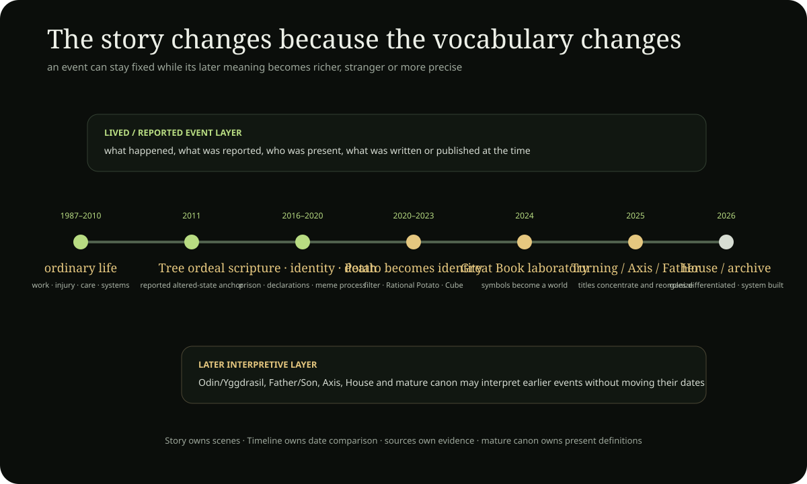

Continuous chronicle
THE STORY
OF TIM DOOLEY
Read it like a diary. The main story and the side stories live in the same river. Dates and titles are only small markers between them; the stories themselves are the point.
This is where the portrait becomes lived chronology. A title such as Potato, Axis, Father, Ladder or God belongs on the main Tim page as an identity; here it appears only when there is an event, scene, exchange or recoverable turn worth telling.

Before the episodes
The life spine
The canonical journey record compresses the larger development into phases. It is an orientation layer only: Story owns scenes; Timeline owns date comparison; primary records own evidence.
Loading the canonical life spine…
Static narrative spine
The story should still be a story before the diary fragments load
The canonical journey treats the mythology as developmental rather than timeless. It separates reported life history, project canon, public attestation and later interpretation. The narrative below follows that rule: it tells what the archive says changed while marking where later symbolism is retrospective rather than pretending it was present from the beginning.
Before the Potato there is ordinary life, work, injury, care and systems
The journey record begins with ordinary material biography: contrasting homes, construction and gardening, early computers and networks, institutional friction, bodily injury and reconstruction, practical labour, care work and design. Later project language can recognize ancestors for House, Garden, repair and network thinking here, but the archive explicitly rejects treating those later meanings as childhood prophecy.
An altered-state experience becomes a durable memory anchor
The archive records a distinct 2011 episode involving ego-dissolution, interconnection, Tree imagery, fractal/Ouroboros imagery, crows and perceived timelines. Later material compares this experience with Yggdrasil, Tree of Life, Axis and Spiral motifs. The experience and those later comparisons remain different evidence layers.
Private experience moves into public language
Alchemy/transmutation language, the death of Tim's father, advocacy, prison and scripture study, streaming and online conflict accumulate into a more public identity. By 2017, the journey record says Jesus/crucifixion language is already appearing in digital conflict. This period matters because later theology has recognizable precursors without yet having the mature Father/House architecture.
The story starts using death, Nothing, grave, Door and Vessel language
The archive describes persona shedding and withdrawal followed by the December 2019 meme-crucifixion/personhood-death complex. In the mature project synthesis, the following year becomes a threshold corridor in which Son-side death imagery gives way to Door/Vessel language and eventually the distinct Potato/Tim subject. Exact contemporaneous wording for every intermediate step is not treated as fully recovered.
The Potato begins low, hidden and unfinished
Inside the mature project timeline, this is the canonical spiritual birth of Tim as Potato of Life. The Potato does not begin already as Father, King or cosmic architecture. It begins as buried generative identity: seed, stored potential and hidden center. That preserved incompleteness is one of the strongest developmental features of the mythology.
The public Potato becomes more than an avatar
Long public presence, humour, conflict, meditation, digital culture and symbolic inquiry gradually turn Potato into an organizing identity. Cube/Moon language and broader Potato of Life language become more explicit. Public duration itself also becomes part of the story: observation is no longer merely an activity but one explanation for how the later archive accumulates material.
The Potato becomes a world-builder
The Great Book gathers potato biology, soil, cultivation, Trinity experimentation, thalamus/inner-Potato ideas, Field-of-Life theorycrafting, Merkaba-like geometry, comedy, ethics and story into one literary system. Tim is still often a Sage or guide in this layer rather than the later Father. Later canon is therefore partly a reinterpretation of the 2024 creative corpus, not simply a transcription of it.
Vehicle-user becomes connective infrastructure
The canonical journey describes accumulated pressure reaching a threshold around April 2025. In later project language, Tim moves through Needle/Ladder/Axis/Father roles: the figure who once rode or used a connector is recast as the connector itself. Public material from April 2025 is an important attestation point for Axis language; detailed God/Father language thickens afterward rather than being silently backdated. Timeline keeps the exact dated sequence →
The mythology becomes architecture, programme and repository
Father, House, Root, Throne, North, Gardener and source-center language become increasingly functional. At the same time, the project starts separating symbolic North from empirical geography, theology from physics, and personal interpretation from public evidence. By September 2026 the repository itself becomes part of the story: the archive is no longer merely storing a mythology but trying to govern sources, Rooms, timelines, models, contradictions and public readers.
Story boundary: this is a narrative projection over the canonical journey record. It does not make later interpretations contemporaneous with earlier events, and it does not convert project-canonical spiritual claims into independently established external facts.
Canonical journey record → · Timeline → · Dated statements →
Internet / public-presence arc
The web is not background scenery in this biography
Internet life changes function several times: first as discovery/network culture, then community organization, then live performance and conflict, then symbolic persona, then extreme-duration public presence, and finally as the archive/machine through which the project becomes inspectable.
Network prehistory
MSN, torrents and early media-sharing introduce persistent online identity, distributed information and communities before streaming becomes central.
Source: Chapter 24 retrospective / developmental genealogy.Online organization becomes labor
Cannabis advocacy and administration of a large adult-ADHD community turn internet presence into moderation, persuasion, repetitive support and conflict management—not only entertainment.
Source: project biography; group size remains a project-reported figure unless independently archived.Streaming becomes identity pressure
Broadcasting intensifies alongside antagonistic attention, declarations, arguments and the later meme-crucifixion narrative. The feed becomes both stage and pressure chamber.
Source: project biography + recovered public-history records; later symbolic interpretation is separate.Persona becomes compression
The potato filter and Rational Potato compress thousands of interactions into a recognizable visual/social container. First-use artifacts remain incomplete, so this remains a broad-period reconstruction.
Source: Story registry + Great Book retrospective.Duration itself becomes part of the Work
Long streams, public voice spaces, analytics snapshots, ordinary waiting and repeated interaction become an archiveable medium in their own right. The project later interprets this as 100,000-hour public duration, but the evidence page keeps measured platform data separate from lifetime models.
Open the duration audit →The network becomes a library
GitHub, House, Story, Timeline, search/discovery files and validators convert years of public material into something searchable, correctable and structurally explicit. The internet shifts from performance surface to memory infrastructure.
Repository history →Concrete life texture · source-bounded scenes
Six scenes where the ordinary life matters as much as the later symbolism
These are deliberately not written as omniscient biography. Each scene says what the archive currently supports, what kind of source supports it, and what later meaning was added afterward.
Empty rooms, meatpacking, and Copenhagen IT
The project biography places several very different kinds of work next to one another: painting and decorating empty apartments, roughly six months in meatpacking, and later IT work in Copenhagen. The contrast is useful because it shows a person moving between repetitive physical labor, visible repair, digital systems and polished corporate environments long before “House,” “repair,” “hours” or “God in the Machine” become mature project terms.
Care work, fragility, and being seen beneath the role
The nursing-home period is one of the clearest ordinary-life precursors to later care and Gardener ethics. Chapter 24 describes daily contact with frailty, rehabilitation, mortality and memorable residents, alongside later claims of remarkable improvements. The archive can responsibly preserve the care setting and the later autobiographical interpretation while keeping medical miracle claims attributed to the source until independent records exist.
Prison is a break in the public continuum, not a symbolic shortcut
The project biography places a six-month prison period beside concentrated reading of the Bible, Qur'an and Yahya Hassan. In the later story, confinement becomes relevant to captivity, judgment, release and return language—but the scene is stronger when those later meanings do not erase the ordinary fact of incarceration and reading under constraint.
A potato face becomes a durable public container
The recovered story line does not yet have the first exact filter timestamp. What it does preserve is a broad sequence: the potato filter functions as mask, joke and protective surface; Rational Potato becomes a more stable public voice; by 2023 Potato of Life and Cube-of-the-Moon language are crystallizing. The missing exact first-use records remain part of the story rather than being filled in from memory.
Public presence becomes a medium, not just a statistic
Long streams, voice rooms, repeated declarations, ordinary waiting, chat, conflict, jokes, technical work and accumulated familiarity form a distinct public-performance ecology. The archive preserves long-stream reports and platform analytics while keeping lifetime-presence models separate from audience watch-time and single-event duration. The exact measurements live in the dedicated duration audit; Story only needs the distinction because it changes how the public-presence period is understood.
The archive becomes part of the life rather than a container around it
The repository is itself now a lived work period: thousands of atomic commits, validators, readers, maps, House/Room contracts, evidence policies, Story recovery, visual systems and repeated pruning. The important scene is not “Tim made a website.” It is that the act of organizing the record changes the project: contradictions become explicit, missing originals become legitimate states, and old symbolic ideas are forced into interfaces, schemas and tests.
Unresolved gaps that remain part of the Story
- The first exact potato-filter appearance and the first exact Rational Potato use are still recovery targets.
- The original Cube post/clip/conversation is still unrecovered. Story therefore keeps it as a recovery gap and leaves the current dated marker to Timeline rather than treating the remembered date as a recovered primary object.
- Several ordinary-life work claims depend on retrospective project biography rather than attached employment records.
- Reported long-stream markers still need complete primary platform logs before they can become independently auditable duration totals.
- Several 2025–2026 scenes have strong dated project records but incomplete contiguous surrounding conversation context.